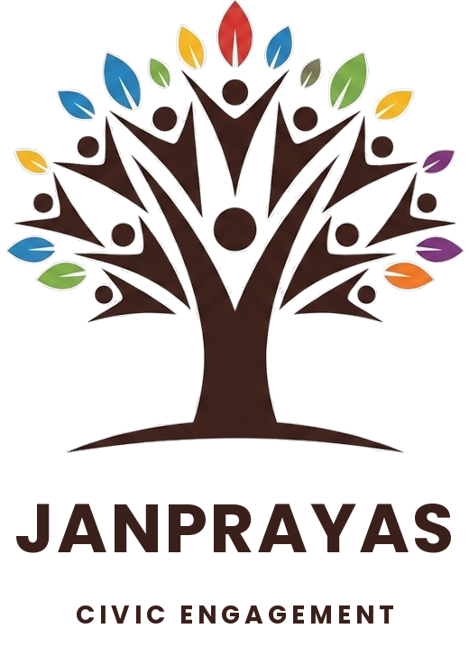

Go to janprayas.dhamtari.gov → Organizations section → click "Register / Log In" → fill your org name, type, description, and contact details → submit. A username and password will let you log in any time.
A district administrator reviews your registration. Once approved, your org appears in the public showcase with a verified badge, and your missions will publish instantly without needing per-mission approval.
Log in → go to the Missions tab → fill the mission title, category, date, location, and volunteer slots. Your org name is pre-filled. Citizens across Dhamtari will see and register for it.
On the day, display the QR code (visible in your mission card on the admin view) at the venue. Each volunteer scans it and takes a live selfie to confirm physical presence — no fake check-ins.
After the drive, log in → mark the mission "Completed" → add actual turnout count, outcome note, and up to 8 photos. This triggers certificate eligibility for all checked-in volunteers.
Your org earns 20 base points per completed mission + 5 points per verified volunteer check-in. High-scoring orgs rise on the district leaderboard and are featured in the showcase.